A phone app that checks a child's teeth from one photo, and a desktop app where dentists review the scans.
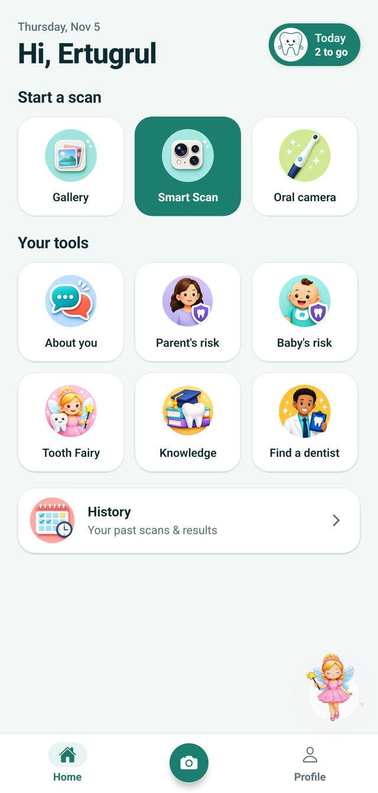
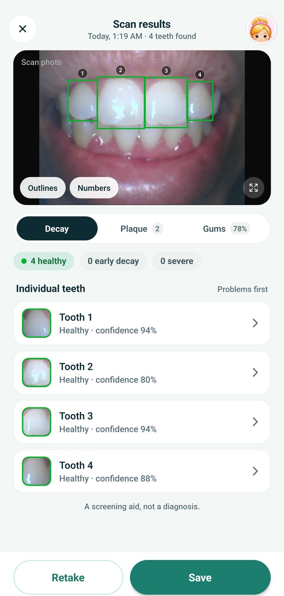
Ertugrul Senturk University of Rochester. Project update, November 2026.
Who misses out on dental care
Nearly one in four children aged 2 to 5 in the United States already has cavities in their baby teeth. In lower-income families, untreated decay is two to three times more common at every age.
Visits follow the same pattern. The usual barriers are practical ones: cost, distance and getting an appointment.
Smart Teeth meets these families on the phone they already own. A check at home is free, needs no appointment, and tells parents when a visit really matters.
CDC Oral Health Surveillance Report 2024 (latest national survey data). Dental visits: America's Children 2025, children with a dental visit during 2023.
One backend and two apps
Families use the phone app at home. Dentists and the research team use the desktop app, which sees the same patients and the same scans. Both talk to the URMC servers. The analysis itself runs on the phone; since November, the servers also forward short text requests to a language model for the Tooth Fairy.
Blue: the parts that already existed or that I integrated as they were. Red: the AI that produces something the family reads.
Three ways to start a scan
Smart Scan opens the phone camera with five illustrated steps, and a small mouth detector follows the mouth in the live preview to place the frame and the focus. A USB intraoral camera can be plugged into an Android phone for clinical use.
Any photo from the gallery goes through the same analysis. For this talk I imported a frontal photo of my own teeth: the app found the mouth, cropped it, and offered to rotate or undo the crop before analysing.
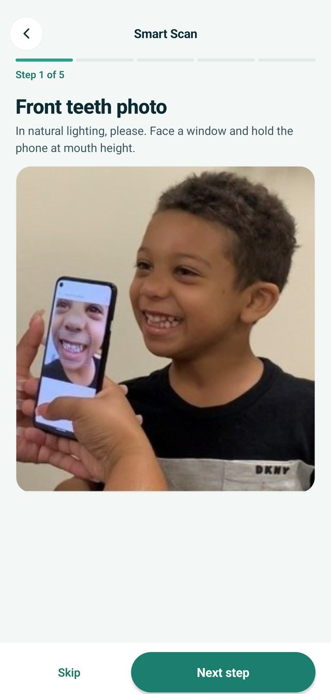
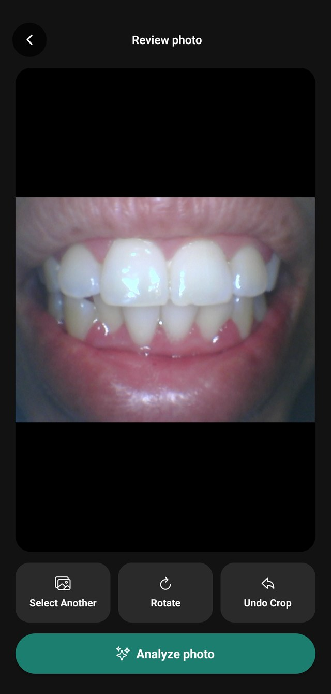
Screenshots from the Android emulator, November 5, 2026. Live mouth tracking runs the mouth detector on 320-pixel preview frames, at most every 100 ms.
The five models
Model
Architecture, framework
Input
Output
File
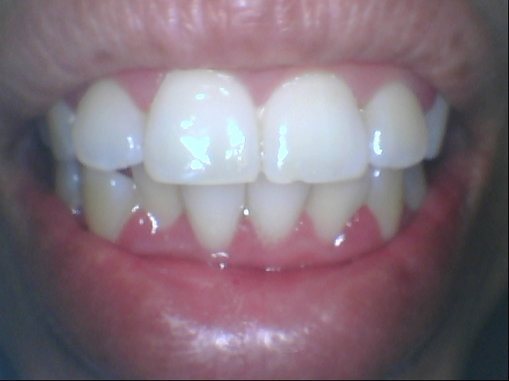
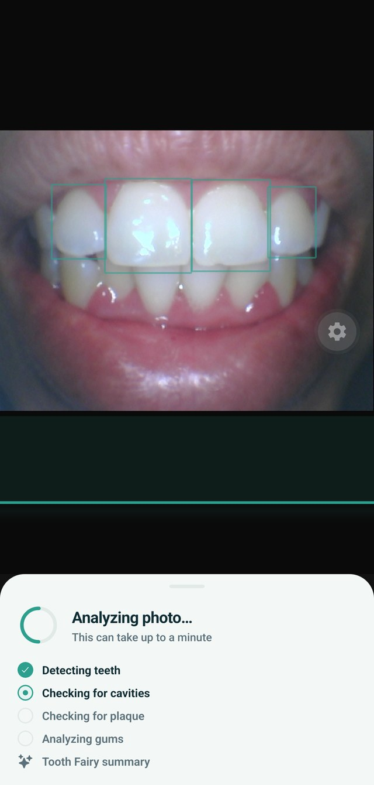
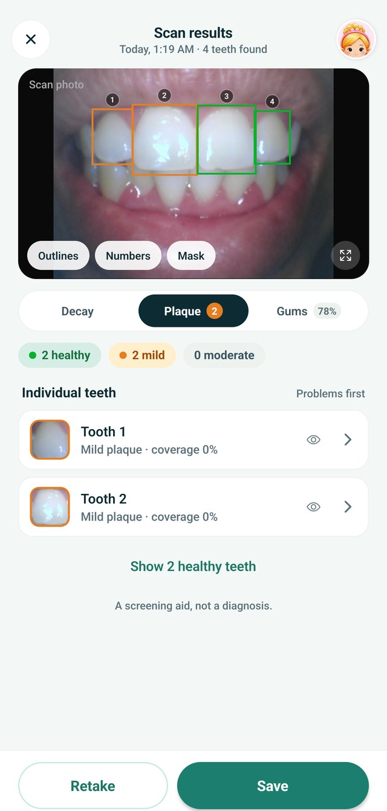
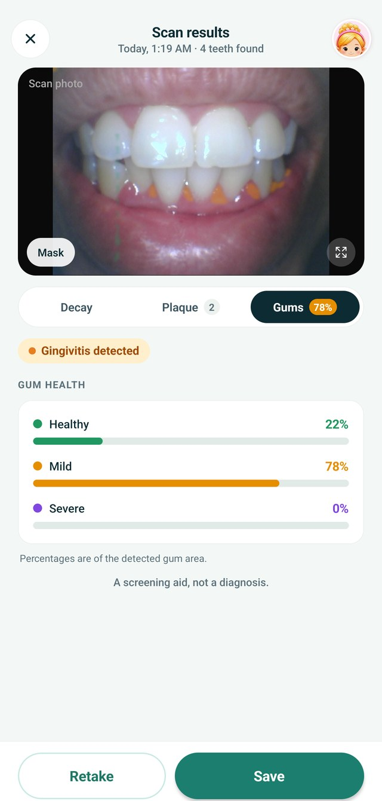
Every model sees the photo resized to 640 px wide. Inputs and thresholds from the app's config/ml.json; architectures from the training code in SmartTeeth-AI. Red: the models I trained myself.
Mouth detection
YOLO11n (Ultralytics 8.3) from COCO weights, 320 px, 150 epochs, mosaic 0.5, mixup 0.1. Recorded run: Open Images V7 "Human mouth", 3,383 training and 596 validation images; mAP50 0.57 with one box per image, precision 0.90, recall 0.58. TFLite: 10.6 ms per frame on a CPU.
Numbering the teeth along the arch
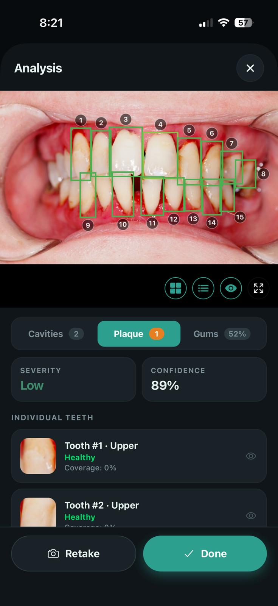
In the app: fifteen teeth found and numbered along both arches, upper row first.
A simplified version of the app's ordering code runs live here on made-up boxes; the app also fits each curve in the best rotated frame and checks how far apart the rows are (src/ml/inference/toothOrdering, gates in config/ml.json). The phone and desktop run the same algorithm.
Tooth detection and cavity classification
Both models came from the research group already trained, without their training data or metrics, and I integrated them as they were.
The tooth detector is a YOLOv4 on 480 × 480 input scaled to 0 to 1. The app keeps boxes down to a score of 0.15 with NMS at 0.5: a tooth missed here can never get a finding, so recall matters more than precision. Each box becomes a tooth crop.
The cavity classifier is a ResNet-v2 classifier in TensorFlow/Keras. It takes the crop resized to 224 × 224 and gives four logits; the softmax winner is the tooth's label, shown with its probability.
Healthyno visible decay
Level 1white spots, early decay
Level 2cavitated decay
Othercrowns and fillings, so they are not read as decay
Tooth detector: 64.3 MB, float32. Cavity classifier: TensorFlow 2.5 SavedModel converted with dynamic-range quantisation (int8 weights, float activations), 24.2 MB. On my photo all four teeth: healthy, 80 to 94%.
Plaque segmentation
The model looks at one tooth at a time. Each tooth crop is padded to a square of 256 × 256 so it keeps its shape, and the model draws the plaque on it and gives a coverage grade from 0 to 5.
It is a UNet++ with an ImageNet-pretrained EfficientNet-B4 encoder, trained in PyTorch on 5,581 tooth crops from 495 labelled photos. The loss is tuned to miss as little plaque as possible, because a missed spot matters more than an extra one.
SAM2 pipeline reference paper
My model
Runs on
a server GPU
the phone, 40 MB
Input
the whole photo
one tooth at a time
IoU on unseen data
0.25
0.18 to 0.28
Plaque pixels found
50%
64%
Also gives
only the mask
a coverage grade, 0 to 5
In the same range as the server pipeline, in a model small enough for the phone. Its weak point is small plaque spots.
Unseen data: the held-out fold of 5-fold cross-validation, 1,116 tooth crops, 117 with plaque. 0.18 averages each tooth equally, 0.28 counts all plaque pixels together. The paper's averaging is not stated, so the comparison is approximate.
Gum segmentation
The training code already existed in the group; I retrained it with the existing pipeline. The model is a U-Net with an ImageNet-pretrained ResNet-50 encoder, in plain PyTorch (38.5 M parameters). It labels every pixel of the 512 × 512 mouth crop as background, healthy, mild to moderate, or severe, on the whole mouth because inflammation ignores tooth boundaries.
393 photos labelled in Labelbox (300 / 53 / 39). Loss 0.6 × Dice + 0.4 × cross-entropy weighted 0.4 / 4 / 4 / 20 for the rare severe class; AdamW, encoder rate 1e-5 against 1e-4 for the decoder, cosine schedule.
The split was per photo, so patients overlap between training and test: optimistic numbers, and the first model to retrain.
Test set of 39 photos: mean IoU 0.53 over the four classes, pixel accuracy 95%. Exported PyTorch → ONNX (opset 17) → onnx2tf in float16, 77.1 MB. Shares on the phone are of the detected gum area.
From training code to TensorFlow Lite
Model
Trained with
Conversion
Weights
File
Checked against the original
Mouth
Ultralytics 8.3, YOLO11n
Ultralytics TFLite export
float16
5.3 MB
validation set again in TFLite: precision 0.87, recall 0.58, 10.6 ms on a CPU
plaque-tooth IoU 0.2730 vs 0.2729, grade accuracy identical
Gums
PyTorch, torchvision; existing code, retrained by me
ONNX opset 17 → onnx2tf
float16
77.1 MB
pixel agreement on unlabelled images only
The app runs TensorFlow Lite through react-native-fast-tflite, so every model has to end up as a .tflite file. Converting from PyTorch goes through ONNX and onnx2tf, which also changes the layout from channels-first to channels-last; for the plaque model the grade head's GELU was replaced by its sigmoid approximation before conversion.
Training code in SmartTeeth-AI (one folder per model); re-runs on BlueHive, one NVIDIA H100 80 GB per job via SLURM. smp: segmentation_models_pytorch.
Loading five models on Android
Model files from the app (211 MB in total). Android gives the app's Java heap 192 MB. Details in the app's docs/NATIVE.md; on Android the models run on NNAPI or the GPU when available, otherwise on the CPU, and on iOS on the CPU.
The Tooth Fairy
New since August: a guide parents can ask in their own words, a written summary after every scan, and three games.
The language model behind it only sees what the parent types and the numbers from a scan, never a photo.
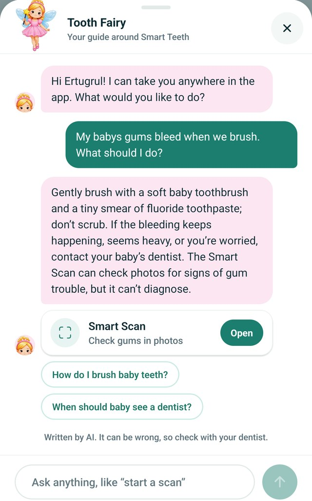
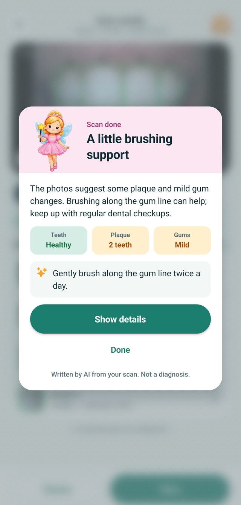
What happens to one message
App design notes docs/TOOTH_FAIRY.md. Model gpt-6-luna through the OpenAI Responses API with a strict JSON schema; moderation with omni-moderation-latest.
What the guide answers
Real replies from gpt-6-luna to the prototype prompts, November 4, 2026, shortened where marked …; times are the full round trip.
A written summary after every scan
When the analysis finishes, the app sends only the counts from the five models. The language model must answer in a strict schema with three fields, and the app lays them out on the card.
Input, everything the server received
Output from the language model
The colored chips under the text come from the models' results, not from the language model, so the writing cannot change a number.
My scan of November 5: four teeth, no decay, mild plaque on two teeth, mild gum inflammation. About 400 tokens per summary.
Cost, latency and the model choice
Cost per call
About $0.0001. A question uses about 800 tokens with its history, a summary about 400, and replies are short with no reasoning step. A thousand families asking five questions and scanning twice a week would be a few dollars a month.
Latency
1.4 to 2.7 seconds for the whole round trip. The reply is not streamed: the strict JSON format has to arrive complete before it can be checked, and then the app reveals it word by word.
Limits
A per-minute rate limit and a daily token budget per account, kept in the database so every server worker shares them. Over the budget the server answers 429 and the app says so.
The model is not final
Provider, model name and key are three server settings behind one adapter, so moving to another model or vendor changes no app code. The choice waits for the IRB review of data about children.
Measured on gpt-6-luna with reasoning effort none, November 4, 2026 ($0.10 per million input and $0.50 per million output tokens). Server: Flask with 4 gunicorn workers; each call holds one for about 2 seconds.
Games and daily routines
Repeated scans of the same child are what make the data valuable, so the app gives families reasons to come back. Three games keep up to three stars each: a two-minute brush-along with a hippo, a spelling game for children with a dental-word quiz for parents, and seven true-or-false cards.
The true-or-false cards are the items of the study's oral health literacy form, so every finished round is saved and synced as a research record.
The care-plan goals became daily routines with local reminders, and the brushing slots start the hippo game. None of this uses a model; it all runs offline.
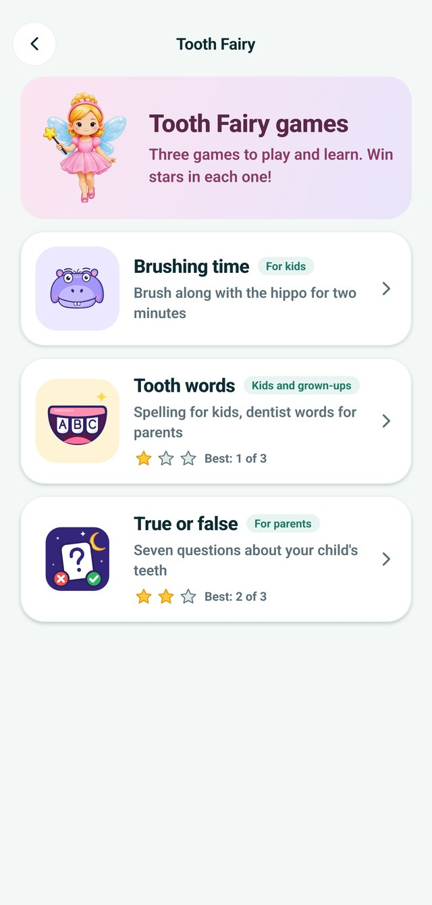
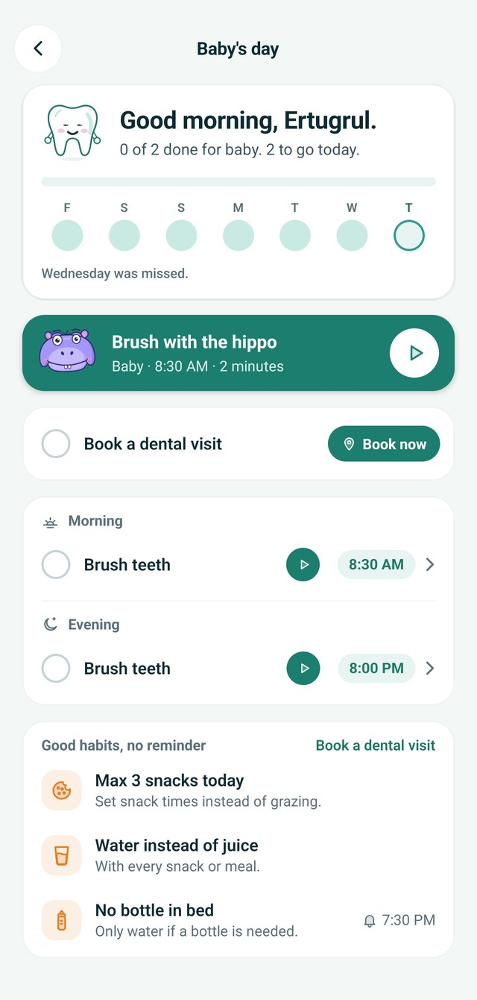
Game content is data in the app (content/games/*.json). True or false: Form 4, perinatal oral health literacy. Routines replaced goals in version 1.2.0, October 3, 2026.
Risk questionnaires and scan history
Caries risk also depends on diet, hygiene and the parent's own teeth, so a child and a parent questionnaire, adapted from the ADA forms, tag every answer low, moderate or high. The score is the highest level answered (10, 60 or 90), the way the ADA forms work, and the scoring table is data, not code.
Every scan and assessment stays on a timeline the parent can reopen. For research this is longitudinal data: the same teeth photographed repeatedly over months, which clinical datasets rarely have.
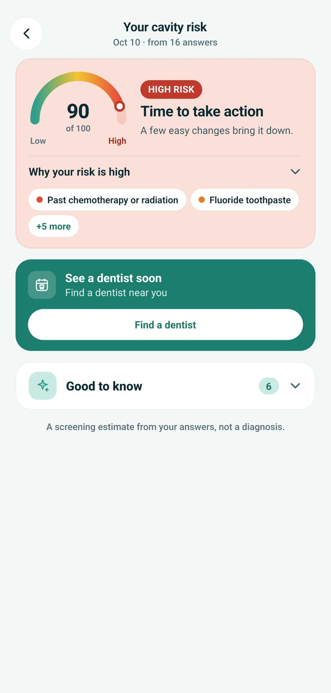
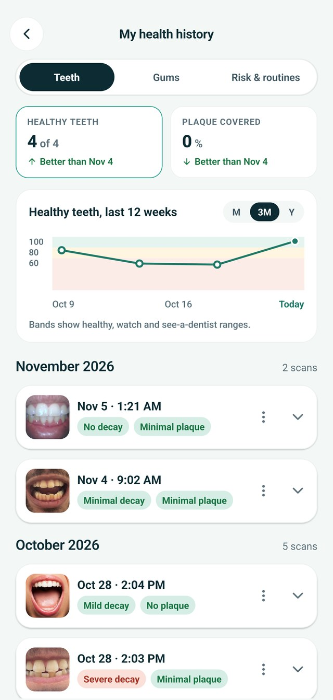
Scoring in content/riskTiers.json and content/questionnaires/*.json; questions from the 2019 URMC clinical content, Forms 1 and 2. Screens from my test account.
Syncing with the URMC servers
Synced: the mouth crop, the tooth crops and the results. Deleted records are only marked as deleted; dentists can erase them permanently from the desktop app.
The desktop app
For dentists and the research team, on Windows and Mac. It signs in to the same servers and sees the same patients and scans.
It is also where the analysis code was first written, before it moved to the phone.
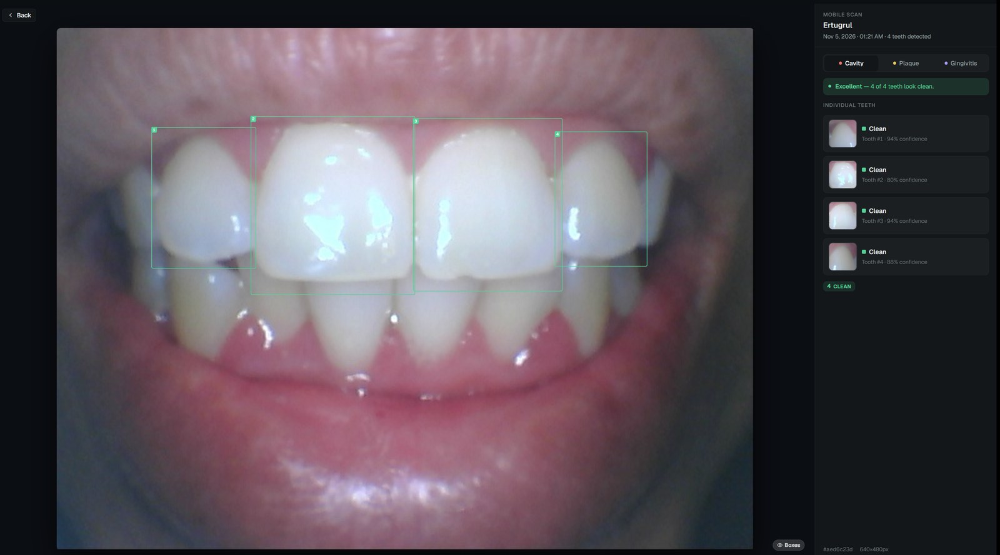
Reviewing home scans without a visit
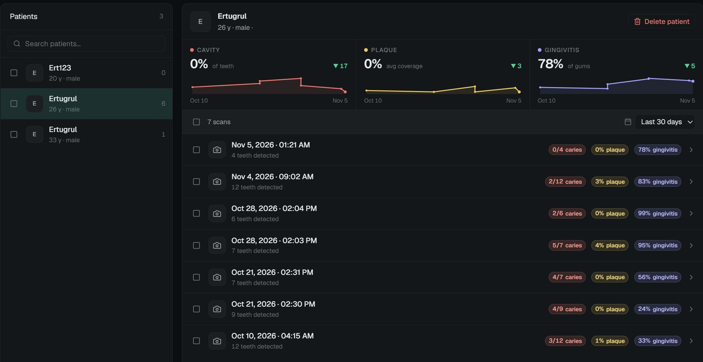
One patient's scans with the findings of each, and trends for cavities, plaque and gumsThe scan I made on the phone at 1:21, on the desktop a few minutes later
Scans taken at home arrive per patient, each with its cavity, plaque and gum findings. Because both apps run the same numbering code, tooth 3 on the dentist's screen is the same tooth as tooth 3 on the parent's phone, which is what makes remote review practical.
Desktop app 1.0.0, my test account. Names of other test accounts and the email address are hidden.
Analysing whole folders at once
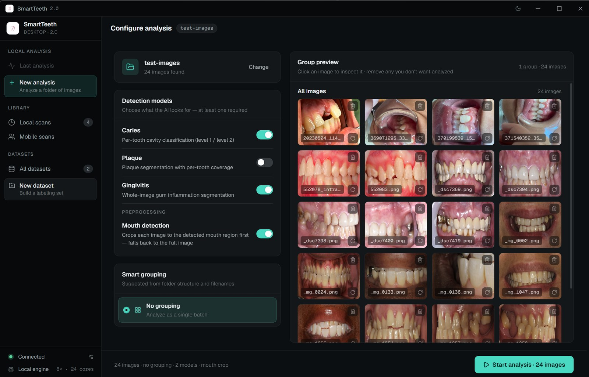
Choose the models, drop in a folder
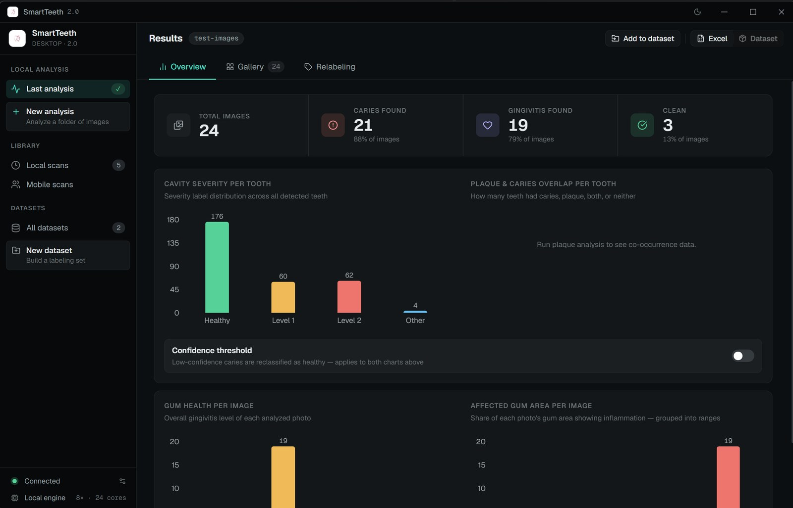
Results per image and charts for the whole batch
The pipeline that analyses one photo on a phone runs here over entire folders, on the computer's own cores. When a model is retrained, this is how the new version is compared with the old one on the same images before it ships.
Screenshots from August on 24 test images; this part of the desktop app is unchanged.
Where expert corrections become data
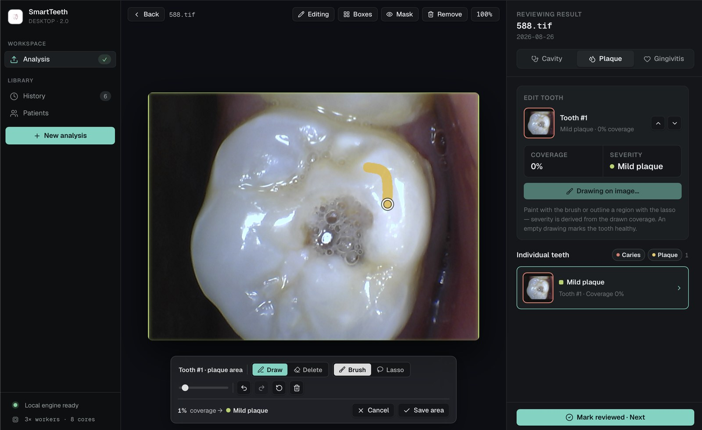
Model predictions are a starting point, not the truth. In the relabeling view each image opens with the model's labels already drawn, and an expert fixes what is wrong: a tooth box, a cavity level, a plaque or gum region.
Corrections are stored apart from the predictions, so we can always see what the model originally said. Every correction is an example the current model got wrong, which is the training data that helps it most.
Desktop app, August 2026: brush and lasso tools for masks; coverage and severity update as the expert draws.
Building training sets without scripts
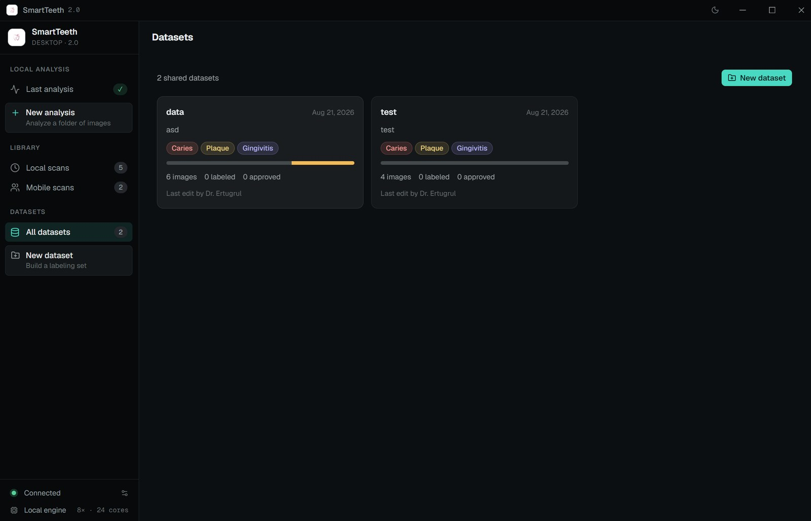
The dataset builder takes relabeled images, applies the corrections and exports a versioned training set. Each version records what went into it, so any result we report can be traced back and reproduced.
I retrained the plaque model the hard way, with scripts and copied folders. This feature exists so that the next retraining, the gum model first, starts from the desktop app.
Desktop app, August 2026: shared datasets with label coverage and review progress.
What comes next
Retrain the gum model
It is the weakest of the five. As soon as enough gum images are relabeled on the desktop, it will be the first model to go through the dataset builder.
Speed on iPhones
On iOS all five models run on the CPU, because the GPU and Neural Engine delegates in our TensorFlow Lite library crash. Fixing the library's Core ML setup would make scans faster there.
Review the AI with the IRB
Parents type about their children, and the model provider has rules for data about children under 13. Data retention and consent are questions for the PI and the IRB before a wider rollout.
Retraining from the desktop
The aim is one full cycle, from corrected labels to a new model on the phones, without touching a terminal.
Summary
On the phone
Five models, 211 MB, analyse one photo offline. I built the mouth and plaque models and retrained the existing gum model. The 40 MB plaque model is in the same range as a server-side SAM2 pipeline on unseen teeth.
The Tooth Fairy
A guide that answers in a parent's own words and opens the right screen, and a summary after every scan, from text and counts only, at about a hundredth of a cent per call.
Coming back
Three games, one of which doubles as a study questionnaire, and daily routines with reminders bring families back, so we get repeated scans of the same child.
The desktop
Dentists review home scans remotely, correct the models, and build the datasets that train the next version.
References
Children's dental health
Centers for Disease Control and Prevention 2024.Oral health surveillance report: dental caries, tooth retention, and edentulism, United States.
Federal Interagency Forum on Child and Family Statistics 2025.America's children: key national indicators of well-being. Dental visits, 2023.
Study materials
URMC 2019.App risk and educational content: Forms 1, 2 and 4.
American Dental Association.Caries risk assessment forms.
Models and losses
Jocher & Qiu 2024.Ultralytics YOLO11.
Bochkovskiy, Wang & Liao 2020.YOLOv4. arXiv:2004.10934.
Zhou et al. 2018.UNet++. DLMIA.
Tan & Le 2019.EfficientNet. ICML.
Ronneberger et al. 2015.U-Net. MICCAI. He et al. 2016.ResNet. CVPR.
Salehi et al. 2017.Tversky loss. MLMI. Lin et al. 2017.Focal loss. ICCV.
Ravi et al. 2024.SAM 2. arXiv:2408.00714.
Software and data
TensorFlow Lite with react-native-fast-tflite; segmentation_models_pytorch 0.5.0; onnx2tf; Expo SDK 57.
MediaPipe Face Landmarker; Open Images V7 (Kuznetsova et al. 2020, IJCV).
OpenAI Responses API, structured outputs and moderation (gpt-6-luna).